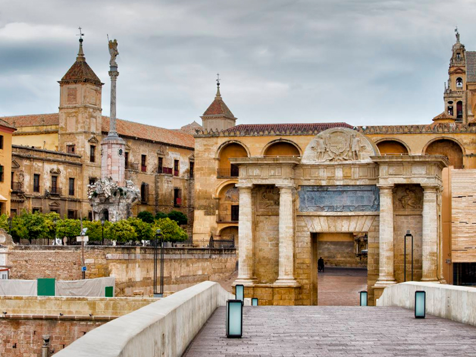
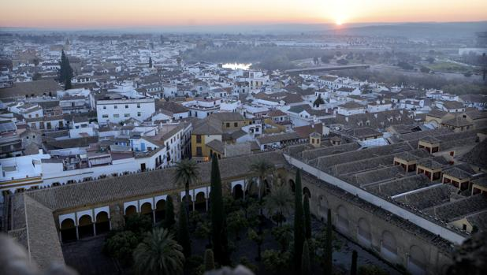

Historia
El poblamiento de Córdoba se remonta a la Edad del Bronce, si bien la fundación de la ciudad tiene lugar a mediados del siglo II a. C. por el pretor Claudio Marcelo, convirtiéndose en capital de la Hispania Ulterior y más tarde de la Bética, llegando a tomar el título de Colonia Patricia, lo que pone de manifiesto la prosperidad y prestigio de que ya entonces gozaba. Tras la caída del Imperio romano de Occidente, la ciudad cayó bajo poder del Imperio bizantino hasta que fue conquistada en el año 572 por el rey visigodo Leovigildo. Hacia finales del siglo VII, las luchas civiles y las intrigas políticas debilitaron el poder visigodo, lo que facilitó la penetración de los musulmanes en la península en el año 711 y la rápida conquista del país, que permanecería bajo la dependencia del Califato de Damasco. En el año 717 Córdoba se convirtió por sus características geográficas y sus posibilidades estratégicas en capital de al-Ándalus; en 756 el príncipe omeya Abd al-Rahman I logra erigirse con el poder en al-Ándalus y establece el Emirato Independiente de Córdoba; en 929 Abd al-Rahman III proclama el Califato de Córdoba. La ciudad alcanza entonces el cenit de su esplendor.
Tras la caída del Califato, ya a principios del siglo XI, Córdoba entra en decadencia política, aunque no cultural. En 1236, el rey Fernando III de Castilla conquista la ciudad, que jugaría desde entonces un papel trascendental en las luchas contra el Reino nazarí de Granada y se convertiría por ello en residencia habitual de los reyes de Castilla. En el siglo XVII Córdoba se sumerge en una profunda crisis que incide negativamente en el desarrollo de la ciudad. En el siglo XVIII se asistirá a una recuperación y cobrará impulso la renovación urbana, si bien en la segunda mitad de esta centuria se llevarán a cabo algunas actuaciones negativas, como la ruptura de la muralla medieval, que vaticinan la vocación destructiva del siglo XIX. El notable crecimiento demográfico del siglo XX potenció el nacimiento de nuevos barrios, que a partir de la segunda década del siglo han ido rodeando la ciudad.
De cada período histórico aquí reseñado se conservan importantes testimonios materiales en la ciudad. Puentes, murallas, torres, puertas de muralla, molinos, vestigios de mezquitas, iglesias, conventos, palacios, etc., engrosan el vasto y rico patrimonio de bienes inmuebles de Córdoba, a lo que habría que sumar un patrimonio mueble integrado por piezas de pintura, escultura e imaginería, platería y artes decorativas en general de extraordinario valor.
Estructura Urbana
Desde el punto de vista de su estructura urbana, cabe decir que el casco histórico de Córdoba está constituido por dos partes físicamente diferenciadas, que son la Villa o antigua Medina musulmana, al oeste, y la Axerquía o barrio oriental. Esta división es herencia musulmana que se va a perpetuar con el paso de los siglos. Durante el período bajomedieval se dotará de mayor impulso a la zona de la Axerquía, poco poblada en el momento de la conquista cristiana, procediéndose a su ordenamiento en siete parroquias o collaciones. En el siglo XVI se abren plazas o se ensanchan algunas existentes, pero la estructura urbana no conoce transformaciones profundas, como tampoco se van a conocer en los siglos XVII y XVIII. Ya en el siglo XIX se producen actuaciones urbanísticas drásticas, como la demolición de las puertas y la mayor parte de la muralla, la creación de paseos y avenidas y la apertura de nuevas vías, que se completan a principios del siglo XX hasta configurar definitivamente el cinturón de rondas que rodea al casco histórico.
Por lo que respecta a la Villa, dentro de ésta se encuentran los restos de la ciudad romana al norte, la Medina andalusí al sur, con la Gran Mezquita Aljama, actual Catedral, y en el extremo suroccidental un barrio de expansión cristiana del siglo XIV surgido al amparo del Alcázar de los Reyes Cristianos. La heterogeneidad de toda esta zona permite dividir la Villa en tres partes: el centro comercial, el entorno de la Mezquita-Catedral y el barrio de San Basilio. Por su parte, en el caso de la Axerquía, la división es mucho más difícil dada su mayor homogeneidad, pese a lo cual se puede llevar a cabo una zonificación basada en la primitiva división en siete parroquias o collaciones. En la Axerquía se conservan la mayor parte de los templos cristianos bajomedievales, tanto las parroquias -de la que solo una ha desaparecido- como las fundaciones conventuales.
En la trama urbana, las estrechas e irregulares calles determinan unas manzanas irregulares de herencia medieval, dentro de las cuales se ajusta un parcelario cuyo tamaño depende de la tipología que alberga, resultando amplio en el caso de conventos, residencias palaciegas o edificios institucionales y menor en viviendas, las cuales suelen responder a una tipología heredada de la casa musulmana, deudora a su vez de la romana de casa patio y cuya imagen más pintoresca son sus patios.
 